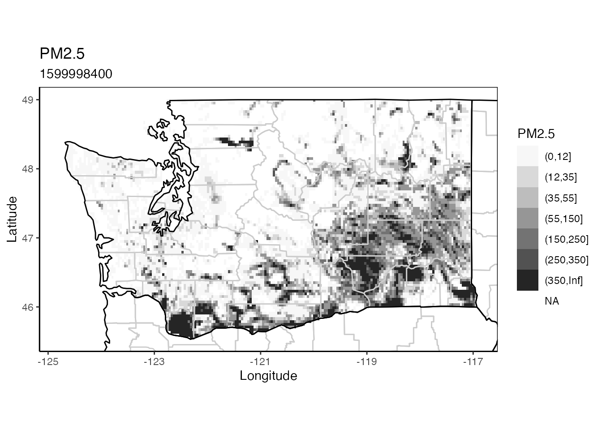
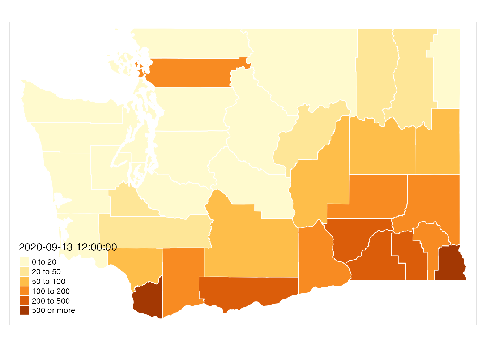

Smoke by County
Mazama Science
2021-03-12
Smoke_by_County.RmdThis vignette demonstrates how to create county averages from BlueSky model runs. This is particularly relevant in the COVID-19 era where health statistics are provided on a per-county basis.
Spatial data setup
The MazamaSpatialUtils package is already a requirement for AirFireModeling and is therefore already installed. We will use datasets named USCensusStates and USCensusCounties. Each of these is a SpatialPolygonsDataFrame (SPDF). These are “S4” objects with per-polygon data stored in the @data slot.
library("MazamaSpatialUtils")
setSpatialDataDir("~/Data/Spatial")
loadSpatialData("USCensusStates")
loadSpatialData("USCensusCounties")
stateCode_of_interest <- "WA"
state_SPDF <- subset(USCensusStates, stateCode == stateCode_of_interest)
county_SPDF <- subset(USCensusCounties, stateCode == stateCode_of_interest)Load raster data
We will load data from a BlueSky model and create a subset for Washington state. The state_PNW_4km object is a “RasterBrick” with 72 layers.
library(AirFireModeling) # For base package support
setModelDataDir("~/Data/BlueSky")
state_PNW_4km <-
bluesky_load(modelName = 'PNW-4km', modelRun = 2020091300) %>%
raster::crop(state_SPDF) %>%
raster_subsetByPolygon(state_SPDF)
# A quick ggplot map from the AirFireModeling package
raster_ggmap(state_PNW_4km, index = 12)
Thematic mapping with tmap
The tmap package is a brilliantly simple way to make attractive plots using both raster and spatial data. It is thoroughly described at Intro to GIS and Spatial Analysis.
Creating a nice looking plot is very straightforward:
library(tmap)
# County boundaries with raster overlay
tm_shape(county_SPDF) +
tm_polygons(col = 'white') +
tm_shape(state_PNW_4km[[12]]) +
tm_raster(
title = "Layer 12",
palette = 'Greys',
alpha = 0.5,
breaks = c(-Inf,0, 12, 35, 55, 150, 250, 350, Inf),
auto.palette.mapping = FALSE
) +
tm_layout(
title = "Predicted smoke in Washington counties"
)Summarizing data
We will use the powerful raster::extract() function from the raster package to summarize our data by individual polygon. In the example below, we calculate the number of grid cells within each polygon to make sure the size of counties is significantly larger than the size of the grid cells.
If there are few grid cells per county, averages based on grid cell midpoints will be misleading. In such a case it would be prudent to increase the spatial resolution first by using the raster::disaggregate() function.
NOTE: Summarizing by polygon can take a while.
# Summarize a single RasterLayer by polygon
countyCellCount_SPDF <-
raster::extract(
state_PNW_4km[[1]],
county_SPDF,
fun = function(x, ...) { length(x) },
sp = TRUE
)
# Replace newly added column name associated with this layer
names(countyCellCount_SPDF) <- c(names(county_SPDF), "cellCount")
# Simple plot
tm_shape(countyCellCount_SPDF) +
tm_polygons(
col = "cellCount",
breaks = c(0, 20, 50, 100, 200, 500, Inf),
border.col = "white"
)
Satisfied that we have enough cells per county, let’s calculate the mean value for each of the 72 timesteps in our model run.
# Summarize the entire RasterBrick by polygon
countyMean_SPDF <-
raster::extract(
state_PNW_4km,
county_SPDF,
fun = function(x, ...) { mean(x, ...) },
na.rm = TRUE,
sp = TRUE
)
# NOTE: 72 additional columns have been added, one per RasterBrick layer
# NOTE: (i.e. timestep). Here we give them sensible column names.
# Replace additional columns with timestamps
names(countyMean_SPDF) <- c(
names(county_SPDF),
as.character(raster_getTime(state_PNW_4km))
)
# Simple plot for 2018-11-09 03:00
tm_shape(countyMean_SPDF) +
tm_polygons(
col = "2020-09-13 12:00:00",
breaks = c(0, 20, 50, 100, 200, 500, Inf),
border.col = "white"
)
Static table
Let’s finish things up with a table or two. First up, we can generate a nicely formatted static table using knitr::kable():
# Get the model timesteps
layerTimes <- raster_getTime(state_PNW_4km)
# Get the SPDF names associated with those timesteps
layerNames <-
names(countyMean_SPDF) %>%
stringr::str_subset("^[0-9]")
# Extract summary data and transpose
timeByCounty_Matrix <-
countyMean_SPDF@data[, layerNames] %>%
round(1) %>%
t()
# Add county names to the columns and then add a 'datetime' column
timeByCounty_DF <- data.frame(timeByCounty_Matrix)
names(timeByCounty_DF) <- countyMean_SPDF$name
timeByCounty_DF <- dplyr::bind_cols(datetime = layerTimes, timeByCounty_DF)
# Look at a portion of the new dataframe
knitr::kable(
timeByCounty_DF[1:10,1:10],
format = "markdown",
digits = 0
)| datetime | …2 | …3 | …4 | …5 | …6 | …7 | …8 | …9 | …10 | |
|---|---|---|---|---|---|---|---|---|---|---|
| 2020-09-13 01:00:00 | 2020-09-13 01:00:00 | 3 | 153 | 61 | 37 | 237 | 17 | 198 | 36 | 1 |
| 2020-09-13 02:00:00 | 2020-09-13 02:00:00 | 0 | 146 | 69 | 26 | 263 | 20 | 157 | 20 | 2 |
| 2020-09-13 03:00:00 | 2020-09-13 03:00:00 | 0 | 203 | 110 | 15 | 354 | 16 | 155 | 7 | 1 |
| 2020-09-13 04:00:00 | 2020-09-13 04:00:00 | 0 | 301 | 160 | 9 | 457 | 7 | 140 | 7 | 1 |
| 2020-09-13 05:00:00 | 2020-09-13 05:00:00 | 0 | 356 | 216 | 9 | 680 | 8 | 125 | 8 | 1 |
| 2020-09-13 06:00:00 | 2020-09-13 06:00:00 | 0 | 472 | 393 | 13 | 807 | 8 | 132 | 7 | 1 |
| 2020-09-13 07:00:00 | 2020-09-13 07:00:00 | 0 | 562 | 630 | 14 | 697 | 10 | 132 | 9 | 2 |
| 2020-09-13 08:00:00 | 2020-09-13 08:00:00 | 0 | 589 | 875 | 15 | 491 | 20 | 143 | 11 | 3 |
| 2020-09-13 09:00:00 | 2020-09-13 09:00:00 | 0 | 598 | 1151 | 12 | 314 | 37 | 160 | 13 | 4 |
| 2020-09-13 10:00:00 | 2020-09-13 10:00:00 | 0 | 507 | 1434 | 8 | 204 | 48 | 161 | 16 | 3 |
Interactive table
Or, we can show daily averages by county in an interactive table. The DT package allows for easy creation of javascript based interactive tables. This time we use counties as rows and show daily averages as columns.
# Create (UTC) daily averages
dailyMean_PNW_4km <- raster::stackApply(
state_PNW_4km,
indices = c(rep(1,23),rep(2,24),rep(3,24)),
fun = mean
)
# Provide better names for the RasterBrick layers
names(dailyMean_PNW_4km) <-
sprintf(
"mean_for_%s",
strftime(layerTimes[c(1,24,48)], "%Y-%m-%d")
)
# Extract per county means
countyDailyMean_SPDF <-
raster::extract(
dailyMean_PNW_4km,
county_SPDF,
fun = function(x, ...) { mean(x, ...) },
na.rm = TRUE,
sp = TRUE
)
# Get the SPDF names associated with the layers (daily timesteps)
layerNames <-
names(countyDailyMean_SPDF) %>%
stringr::str_subset("^mean_for_")
# Extract daily averages and transpose
dayByCountyData_DF <-
countyDailyMean_SPDF@data[, layerNames] %>%
round(1)
# Improve the dataframe
rownames(dayByCountyData_DF) <- NULL
colnames(dayByCountyData_DF) <- stringr::str_replace(layerNames, "mean_for_", "")
dayByCounty_DF <- dplyr::bind_cols(county = county_SPDF$name, dayByCountyData_DF)
# Display as an interactive table
DT::datatable(dayByCounty_DF)